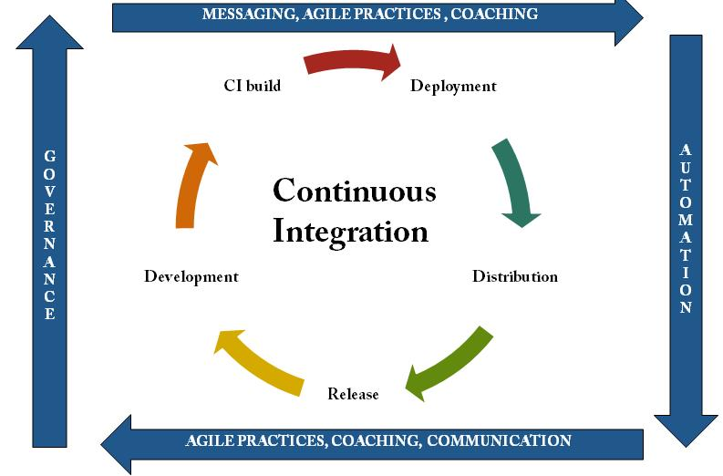

Для чего мы собрались?


- Docker
- Kubernetes
- Jenkins

Docker
- Создать простое приложение с фронтендом и бекендом.
- Написать для них Dockerfile
- Собрать локально images
- Запаблишить на dockerhub
- Запустить локально собранные контейнеры
- Убедиться что все рабоатет на локальных портах
- Лучшие практики
- Build context что это
- Debug сборки image - RUN
- Multi-stage сборка
- .dockerignore и кеширование
Kubernetes
- Развернуть k8s кластер в Digital Ocean
- Настроить подключение к удаленому кластеру
- Создать поды
- Создать сервисы
- Сделать доступными снаружи кластера k8s